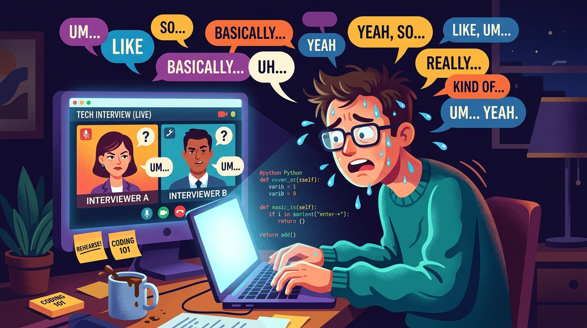

EXPECTATION VS REALITY 🤡
The Anatomy of an Interview Meltdown


Live Reaction: "Wait... what was the question again?!" 🫠
🫠 Me 30 Seconds into Live Interview
- 🔁 "Um, so... basically... like... you know..."
- 💻 Brain reboots like Windows 95 mid-sentence.
- 🎤 Speaking at 210 WPM like Eminem speed-rapping.
- 💀 Forgot Result entirely & ended with "...and yeah".
- 😳 Sweating through shirt while interviewer stares blankly.

GO FORTH & GET HIRED! 🎉
KADENCE AI is ready to supercharge your vocal confidence.
Any Questions? (Or are you too busy counting your "ums" right now? 😉)